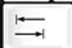
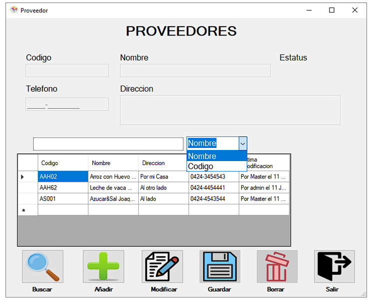
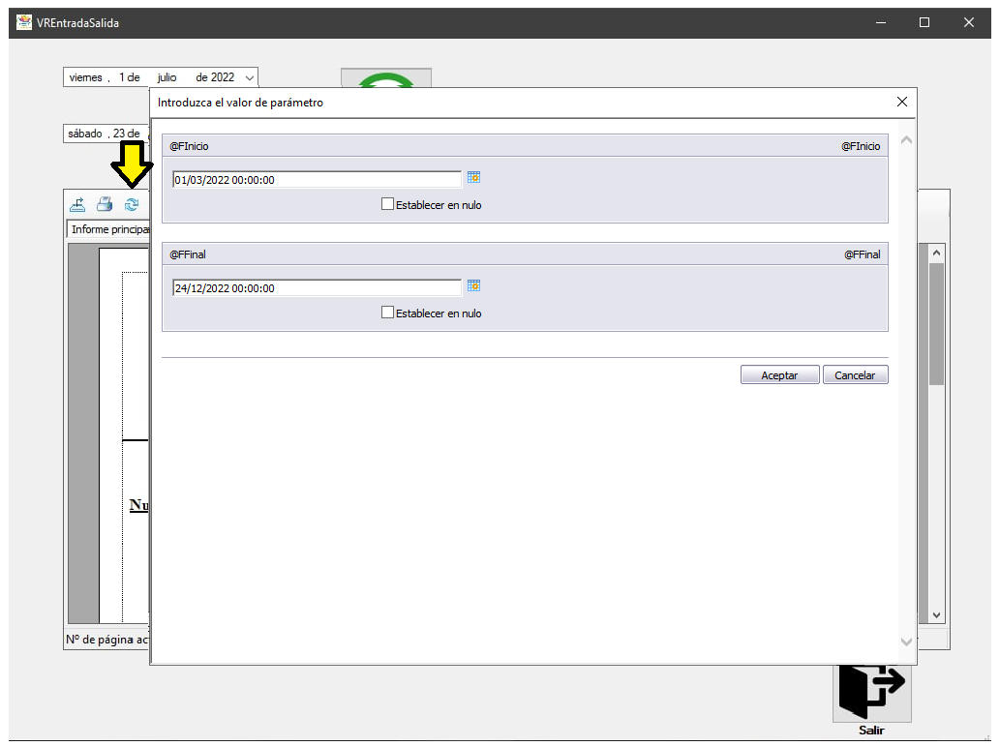
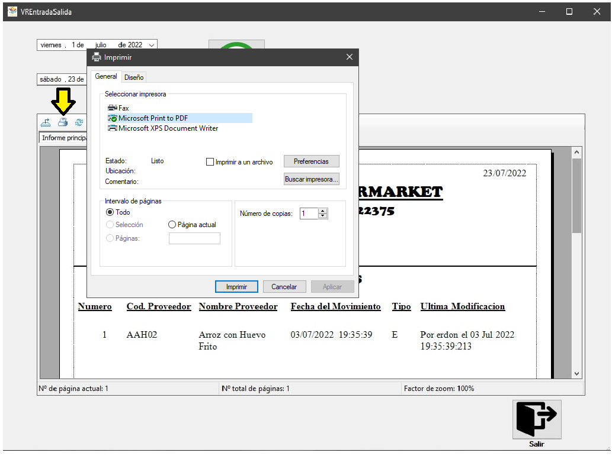

Introduccion
Este manual tiene como finalidad presentar toda la información referente al sistema de inventario y facturación de Fresh Supermarket y funcionar como una guía para el uso correcto del programa. Este documento muestra cada parte del programa y cómo usarlo correctamente, presentando las ventanas del sistema, su funcionamiento, las opciones del sistema, como desplazarse por ellas y los botones que integran cada una. Con este manual, se da toda la información necesaria para realizar de manera eficiente todas las operaciones relacionadas al registro de productos y procesos de facturaciónOrigen del Sistema
La empresa Fresh Supermarket, fue creada el 26 de Junio de 2003. Esta empresa fue creada con el objetivo de la venta de productos de necesidades básicas como seria: productos de limpieza e higiene y alimentos al consumidor y se encuentra ubicada en la Av. Andrés Eloy Blanco, Calle 127, municipio Valencia, Estado Carabobo.Esta empresa desde sus inicios, ha manejado un sistema de inventario y facturación manual, controlando así los productos en inventario y las operaciones de compra y venta realizadas, sin embargo, debido a la cantidad de ocurrencias de registros y las limitaciones de este sistema, se han perdido datos de los productos y de los clientes, además de presentar lentitud a la hora de buscar las existencias de la mercancía o información de los clientes, productos y proveedores, siendo fatal para la organización.
Es por esto que nace el sistema automatizado de inventario y facturación para la empresa Fresh Supermarket debido a que se da a destacar la necesidad de un sistema que pueda efectuar operaciones de facturación a clientes de manera eficiente, registrar la información de manera segura y que pueda mantener un control sobre los datos de la empresa tales como: los productos en venta, proveedores de mercancía, mostrar los clientes registrados y las facturas realizadas en el programa.
Configuración e instalación
Requerimientos de hardware y software mínimos para el funcionamiento óptimo del programa:Descripción de iconos y teclas de función
En el sistema, aparece una serie de iconos los cuales funcionan como botones que al pulsarlos, tienen cierta función. Para desplazarse por los campos y botones, existen dos maneras, con el cursor, o con el teclado, ya que el teclado contiene una serie de teclas que permiten esto, a estas teclas se les conoce como teclas de función. A continuación, se mostrarán los iconos del sistema, su funcionamiento y las teclas de función para desplazarse por él.Iconos
Botones de las Ventana de Inicio y Divisa
El botón de “Aceptar” permite acceder al siguiente formulario con la condición de que los datos ingresados sean los correctos, de lo contrario, mostrará un mensaje de error el cual le dirá que intente de nuevo.

El botón de “Cancelar” permite salir del sistema, al pulsarlo, aparece un mensaje indicando si está seguro de su respuesta, si está seguro, saldrá del sistema, de lo contario, volverá al formulario de Inicio
Botones de las ventanas de Compañía, Usuarios, Clientes, Productos, Entradas y Salidas y Facturación

El botón “Añadir” permite ingresar nuevos datos

El botón “Buscar” permite realizar una búsqueda de información en la base de datos colocando los datos que sean de interés para el usuario

Permite modificar registros de la base de datos del sistema

Permite guardar los datos que el usuario ingrese en algún campo en la base de datos.

Elimina los registros de la fila seleccionada del sistema.
Permite salir de la ventana y volver al Menú
Permite cancelar la operación que se está realizando.

Permite confirmar la operación efectuada.
Teclas de funcion

Estas teclas permiten el desplazamiento por las ventanas. Estas son:

El tabulador, también denominado como “Tab” permite moverse hacia adelante entre los diferentes iconos y campos del sistema.
La combinación entre la tecla “Shift” también representada en forma de una flecha hacia arriba, y la tecla “Tab” permite regresar entre los diferentes iconos y campos del sistema. Para que funcione hay que dejar pulsado la tecla “Shift” y pulsar la tecla “Tab” según los espacios que desee moverse
La tecla “Espacio” o “Space” permite marcar una casilla de chequeo

La tecla ”F4” permite abrir un cuadro de opciones desplegable

Las flechas permiten moverse entre los caracteres o elegir una opción dentro del cuadro de opciones desplegable
Descripción de las Pantallas del Menú
Ménu

Barra Superior del Menú

Cabe destacar, que según el usuario que se elija, algunas opciones podrán estar inhabilitadas.
Barra Inferior del Menú

Ventana de Compañía

Ventana de Usuarios

Por otra parte, para modificar, se debe seleccionar el usuario a modificar y colocar en el campo [Contraseña] o [Nivel de Acceso] el aspecto que se quiera cambiar del usuario
Ahora, para eliminar, se ingresa el nombre del usuario en el campo [Usuario] o se puede seleccionar la barra de la derecha y se hace doble click en el nombre que se desea eliminar, seguido a esto, pulsar eliminar, pedirá confirmación, de estar seguro, pulse “Si”. Para salir de esta ventana, pulse cancelar
Ventana de Clientes
Ventana de Proveedores

Ventana de Productos

Ventana de Entradas y Salidas

Ventana de Facturación
Ventana de Facturación
Ventana de listado Entradas y Salidas
Ventana de listado Facturas
Descripción de Entrada de Datos
Inicio


El formulario de inicio está diseñado para que si llegara a ingresar datos incorrectos el sistema devolverá un mensaje indicando que los datos de ingreso no son válidos, e invitando al usuario a intentar nuevamente. Se debe tener en cuenta que tanto el nombre del usuario como de la contraseña se deben colocar en minúsculas, ya que está almacenado de esta manera, de colocarlo en mayúscula, el sistema lo detectará como un error y tendrá que intentar nuevamente.
Divisa
Por otra parte, se da a destacar que para ingresar el nuevo valor debe tener conocimiento acerca de la tasa de cambio en divisa de ese día, por lo tanto, el sistema cuenta con una herramienta ubicada en la parte inferior izquierda la cual le permitirá ingresar a la página de “DolarToday” para ver la tasa de cambio de ese día (Cabe destacar que para usar esta herramienta debe contar con acceso a internet).
Al ingresar el valor, el usuario debe tener en cuenta que de colocar letras o caracteres, este no los tomara como datos válidos y nos los registrara; Por otra parte, de dejar el campo [Nuevo Valor] vacío, el sistema lo tomará como un error y deberá intentarlo nuevamente.
Cabe acotar, que al cerrar el programa, el sistema tendrá almacenado el ultimo valor de tasa de cambio en divisa que se ingresó, el cual se mostrara en pantalla como “Valor Anterior”, si desea cambiar el valor, solo debe ingresar la tasa de cambio en divisa de ese día en el campo [Nuevo Valor].
Compañia

Para poder acceder a la ventana de compañía se requiere ingresar al sistema con un usuario de nivel Administrador o Gerente, la ventana no estará disponible para aquellos usuarios de menor nivel Empleado.
Al presionar el botón añadir, se desbloquearan las casillas para ingresar los datos, pudiendo implementar otra compañía si así se desea.


Usuarios
Para poder acceder a la ventana de Usuario se requiere ingresar al sistema con un usuario de nivel Administrador, la ventana no estará disponible para aquellos usuarios de menor nivel.
Al presionar el botón añadir, se colocara en la lista un nuevo usuario que será totalmente funcional de manera inmediata con el cual poder ingresar al sistema, para esto es obligatorio de llenar los datos de todas las casillas, de lo contrario, una notificación de no dejar los campos vacíos.
Clientes
Al presionar el botón añadir, se desbloquearan todas las casillas bloqueadas, permitiendo el ingreso de los datos.

Proveedores
Al presionar el botón añadir, se desbloquearan todas las casillas bloqueadas, permitiendo el ingreso de los datos.

Para modificar los datos de un proveedor, se debe dar click en el botón de “Modificar”, lo cual desbloqueara todas las casillas de los datos del proveedor seleccionada en el panel, excepto la Codigo que no puede ser modificable.
Productos
Las casillas con los nombres de “Existencia”, “Precio” y “Costo” son utilizadas en la pantalla de entradas y salidas, debido a que primero se debe de registrar la existencia de un producto.
Al presionar el botón añadir, se desbloquearan todas las casillas bloqueadas, permitiendo el ingreso de los datos.
Entrada / Salida
Al presionar el botón añadir, se desbloqueara la casilla al extremo derecho arriba bloqueada, permitiendo elegir el proveedor, al ser uno elegido, se mostrara el código y el nombre.

Facturación
Al presionar el botón añadir, se desbloqueara las casillas al extremo derecho arriba bloqueada, permitiendo elegir al cliente en la ventana que los muestra o pudiendo buscarlos introduciendo la Cedula/Rif y/o el nombre.

Descripcion de salida de datos
Listado de entrada y salida
El Listado de entrada y salida es donde se generan los reportes de los movimientos de entradas y salidas dependiendo del rango de fecha que se haya elegido.Ademas de la informacion antes dicha, el reporte trae consigo una variedad de botones que cumplen distintas funciones.
El boton que tiene la imagen de unos binoculares, permite buscar cualquier texto en el reporte.

El boton que tiene la imagen de una hoja de papel siendo impresa, permite imprimir el reporte, este abre una ventana con las opciones para la impresion y da a escoger la impresora.

El ultimo boton que tiene la imagen de una flecha y un disco duro, permite exporte el reporte al computador en cualquiero formato de lectura, mostrando una ventana donde se puede escoger el lugar de guardado y el formato.
Listado de facturas
El Listado de facturas es donde se generan los reportes de las facturas dependiendo del rango de fecha que se haya elegido.Ademas de la informacion antes dicha, el reporte trae consigo una variedad de botones que cumplen distintas funciones.
El boton que tiene la imagen de unos binoculares, permite buscar cualquier texto en el reporte.